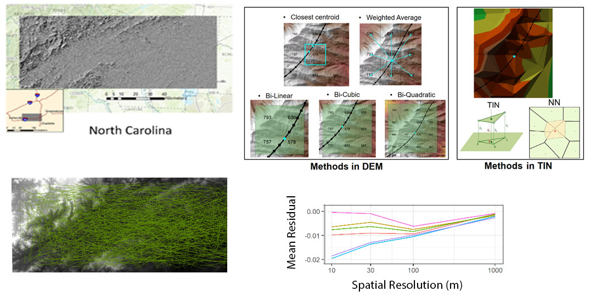
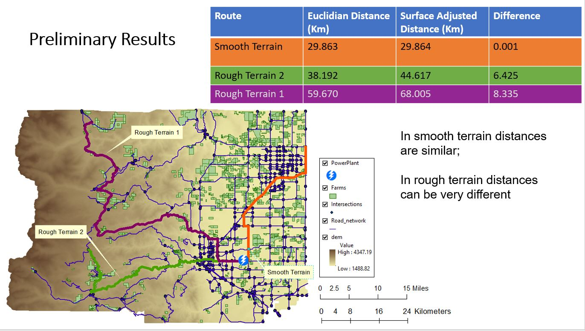

Uncertainty Propagation in Distance Metrics Across Scale
The first case study focuses explicitly on scale but implicitly on time, specifically monitoring error and uncertainty in estimations of distance made across a range of spatial resolution. Distance is the fundamental metric that anchors spatial analyses such as proximity analysis, spatial pattern detection, and spatial interpolation. Conventional distance measurement on digital terrain assumes that Digital Elevation Model (DEM) pixels are rigid and flat, as tiny facets of ceramic tile discretizing a continuous terrain surface. As DEM pixel size increases, the errors introduced by this assumption can propagate dramatically across resolution, especially in rough or mountainous terrain where distance intervals are not uniform because the distance across a DEM pixel will vary with slope and curvature. Similar progression of scale-based errors can be seen with derivatives of distance such as surface area. Surface-adjustment methods to correct linear distance errors have been established in previous research by the Colorado team, and these will be validated for much larger data samples using the triangle data framework developed in this NSF project.
An initial pilot establishes what interpolation method generates the least uncertainty in distance estimates. Our experiment tested several methods to interpolate off-centroid elevation and then computed distances incorporating terrain slope. We measured lengths of 1,000 randomly placed distance transects across six DEMs of varying roughness, measuring transect lengths across a range of spatial resolution and comparing these with 3-meter LiDAR data to establish patterns and progression of error in estimated distance. Results show that errors increase with larger pixel size and terrain slope; but what is not yet clearly understood is what rate of increase will occur and how this rate will be impacted by local metrics of terrain roughness and non-uniformity. In the graph, negative values reflect under-estimation relative to the LiDAR data. Residuals were normalized by transect length and then averaged. The weighted average method (pink line at top of graph) produces the smallest under-estimation, with residuals closest to zero across all resolutions.

A second experiment in the case study applies the surface-adjusted distance estimation to estimates of shortest path distance in a routing exercise. Estimates are provided using the well-known Dijkstra algorithm to traverse a road network, comparing planar distances with surface-adjusted distances. Once again, slope and terrain roughness can increase the shortest path estimates, leading to errors in route length when planar distance estimates are applied in mountainous terrain. Further work will examine the rate of increase and compare it statistically with quantitative metrics of terrain roughness.

Reference
Qiang Y, Buttenfield BP, and Joseph M. 2020. How to Measure Distance on a Digital Terrain Surface and Why it Matters in Geographical Analysis. Geographical Analysis 53(3): 588-622. doi: 10.1111/GEAN.12255.